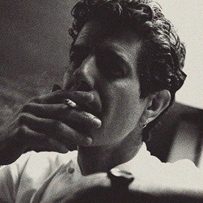

Conteúdos para o perfil de teste e o aquecimento da futura marca de Fábio e Taiguara.
Escolha uma, copie e cole no perfil. Em "Usar na prévia" ela aparece no card do perfil abaixo.
A prévia mostra o feed na ordem definida. Trocar a foto e editar a bio funciona só nesta tela; para guardar, tire print.

Uma para frase de impacto, uma manuscrita e uma sans para textos longos.